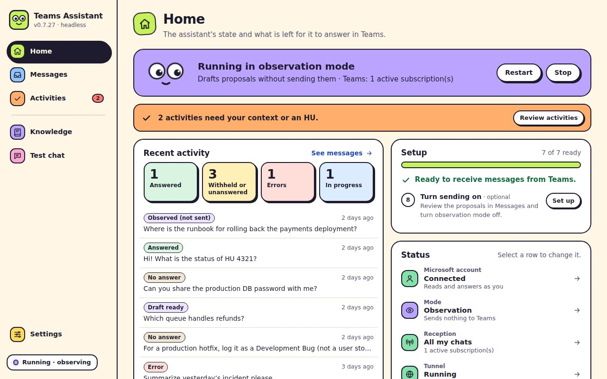
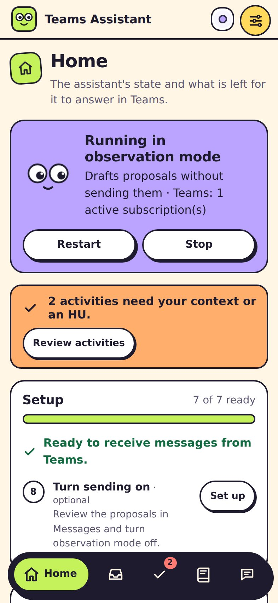
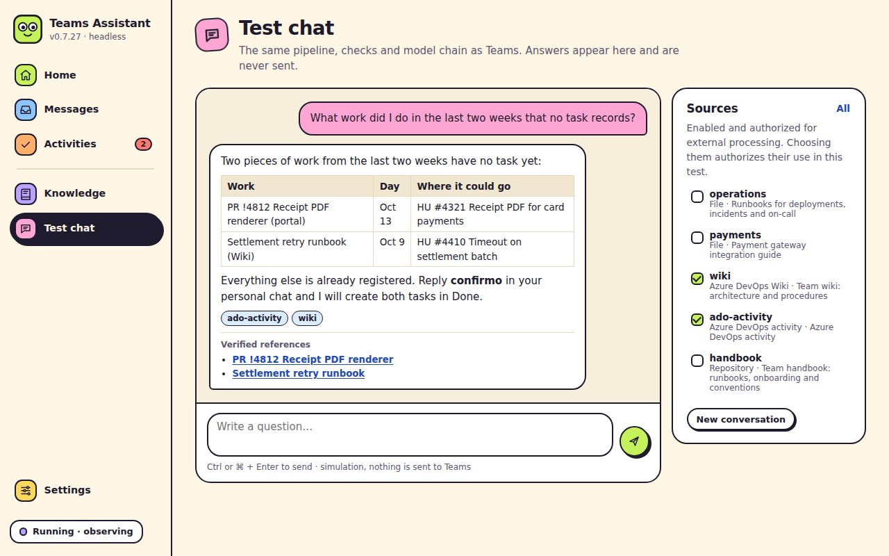
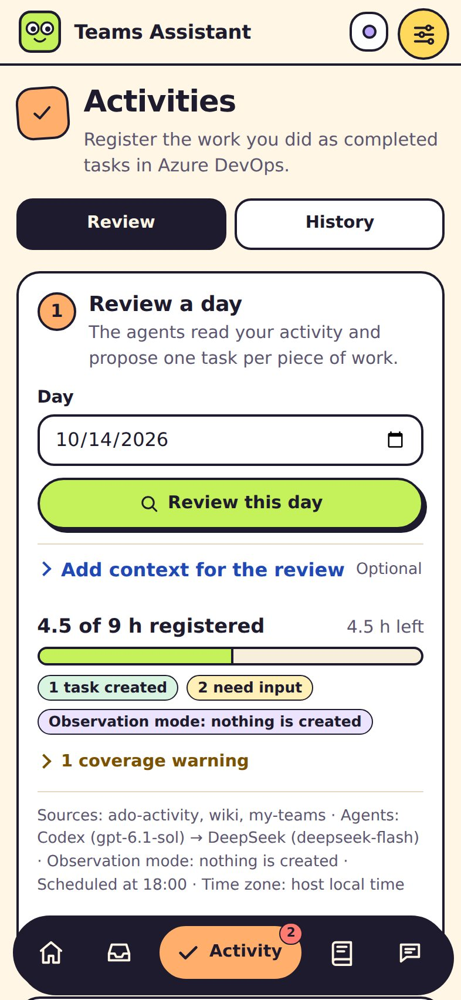

Your own identity
It replies as you, not as a bot. A public Entra client with PKCE and only User.Read, Chat.Read, ChatMessage.Send and offline_access.
It replies for you when someone messages you directly, mentions you, or when you ask it in your chat with yourself. It gathers evidence from your sources, drafts with Codex, Claude Code or DeepSeek, verifies every link and sensitive value in code, and sends exactly once.
cargo install personal-teams-assistant --lockedOpen source (MIT) · Tray app on macOS and Windows · Web portal for your phone · Headless on Linux and servers · Replies in English or Spanish


Models propose; code decides what can be read, what can be cited and what gets sent.
Microsoft Graph notifies it of every new message through a webhook. Your chat with yourself is also checked every 10 s.
Only direct messages, real mentions or your chat with yourself. Calls, meetings and “got a minute?” are left to you.
It reads only the sources open to that conversation: Git repositories, URLs, Azure DevOps wikis and activity, verified notes and your own Teams messages.
Codex → Claude Code → DeepSeek. If the first one fails or runs out of credits, the next one answers; the following call starts again from your default.
References, IDs, URLs and sensitive data. If something can't be checked, the reply is held back and you get a note in your chat with yourself.
As Teams HTML, logged before it goes out. It never retries: when in doubt, the message is left for human review.
It replies as you, not as a bot. A public Entra client with PKCE and only User.Read, Chat.Read, ChatMessage.Send and offline_access.
Every source starts disabled, with no audiences and no external processing. You decide which conversation can use what. Answers link the Wiki pages, work items and pipelines they cite.
Ask what you did in the last two weeks that no task records. It compares your commits, pull requests, pipeline runs, releases, Wiki edits and Teams messages with your work items, lists what is missing with verified links and proposes where each piece goes. Say yes in your chat with yourself and it registers them.
Once a day or at intervals, register verified work as completed Azure DevOps tasks under the right user story, against a daily target (9 hours by default). Unclear descriptions, effort, HUs or calls wait for your context, and History shows what you approved, day by day. Everything is also in pta activity.
Start with drafts that are never sent. Review them in the app, rate them, keep the good ones as examples, and turn on sending once you trust them.
What it decided, how it read the question, which model answered, what failed first and a log of every step, in the Messages tab or with pta audit.
The tray app and a web portal behind Cloudflare Access share one interface: install the portal on your phone's home screen and use it in light or dark.
The pta CLI with stable JSON output, a built-in skill, and pta mcp: an MCP server so Claude Code, Codex or any client can operate it, asking you before anything leaves your machine.


Audiences, paths, URLs and limits are verified in code. The question, the documents and the results are treated as untrusted data.
It installs the app, the host and the pta CLI. Your profile, credentials and account carry over between versions.
Tray app, host and CLI. Requires Rust, the Tauri 2 prerequisites and Git.
cargo install personal-teams-assistant --locked
personal-teams-assistant # opens the appNo Tauri or WebKit: it is operated with pta, runs as a systemd service and can serve the web portal.
cargo install personal-teams-assistant \
--no-default-features --locked
personal-teams-assistant --headless --startSave your credentials, pick the reply language and the order of the models, and register your Entra app. Its Home tab tells you what's missing.
pta statusSign in with your Microsoft account and expose the local port through a stable HTTPS URL, for example with Cloudflare Tunnel.
pta auth microsoft loginAuthorize your sources, start the assistant and review its drafts without sending anything.
pta startOnce you trust the drafts, turn off observation mode.
pta mode activeTo receive messages, the machine running the assistant must be on and reachable through a public HTTPS URL. Don't run two active instances for the same account.
Nothing is sent until you decide.
cargo install personal-teams-assistant --locked